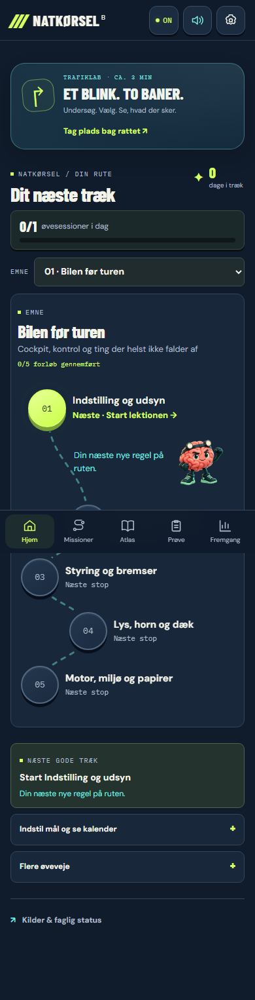
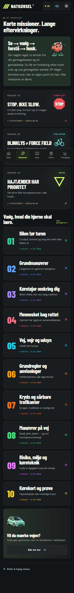
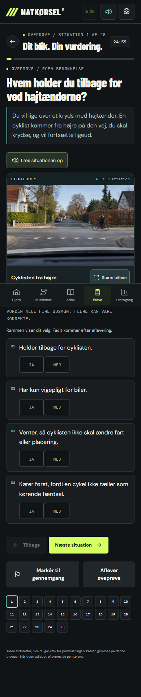
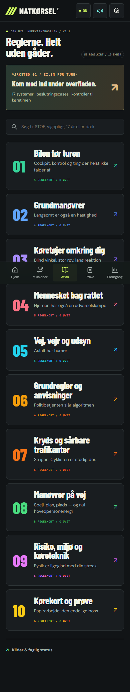
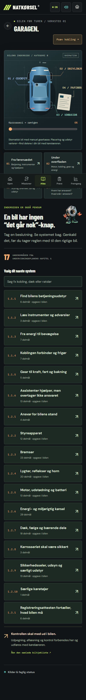
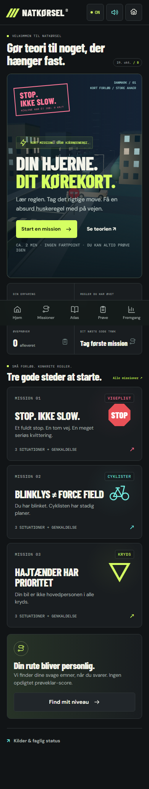

Audit, research, tre karakterretninger og to UI-retninger. Du vælger én karakter og én UI-retning (eller et mix), så bygger jeg resten.
Hele appen er kørt lokalt og fotograferet på 14 skærme × 5 bredder (320–1440 px), med axe ved 390 px og Lighthouse på mobil. Rådata ligger i docs/redesign/audit/.
Kun delvist. Det visuelle er generisk (mørk navy, syregrøn, mono-mikroetiketter, kondenseret display-font, AI-hjerne med sneakers). Men tre ting vejer mindst lige så tungt:
Konklusion: nyt skin, ny karakter, ny informationsarkitektur og hurtigere start. Indhold og logik bliver.






reference/), prøveformat 25 situationer · 25 min · højst 5 fejl (danish-theory.md, kilder fra maj–aug. 2026; tjekkes igen før lancering).docs/redesign/audit.mjs), som køres igen efter hver ændring.kilde læst betyder, at primærkilden er læst i denne runde. produktkendskab betyder, at punktet bygger på kendskab til produktet og skal efterprøves hands-on.
| Reference | Tag dette princip | Undgå |
|---|---|---|
| Duolingo: shape language kilde læst | Få primitive former, færrest mulige detaljer, tydelig silhuet, overdriv det vigtigste træk. Humor skal sænke frygten for at fejle. | Den grønne, chunky Duo-æstetik én-til-én. Uklare billeder, for i en læringsapp bliver vores fejl elevens fejl. |
| Duolingo: visemes og Rive kilde læst | Rive-state machine med to lag (krop og mund). Reagerer på elevens handlinger i realtid og fylder meget lidt. | Mundsynk på alle 1.235 klip i første version. Det kommer senere. |
| Rive: Lily produktkendskab | Personlighed gennem tilbageholdenhed. En karakter med attitude virker stærkere end én, der altid er glad. | Karakterer uden kant, som kun klapper. |
| Tolan: designing characters kilde læst | En præmis, der undskylder fejl (et væsen, der er nyt her). “Aged-up cute” for teens og voksne. Mød en færdig figur først, og tilpas den bagefter. | Tolans rumvæsen-look og 3D-stil. Den tilhører Hilleli og Zanotto. |
| Tolan: brand (DMCG) kilde læst | Rolig, dæmpet UI, så karakteren står frem. Karakteren interagerer med UI (sidder på progressbaren, kigger frem bag kort). Én tung, afrundet skrift. | Kaotisk karakterenergi i selve prøveflowet. |
| Finch: design critique kilde læst | Omsorgsløkke knyttet til rigtige mål. Energien stiger synligt, når man gør noget. | Mange tilpasningsvalg i onboarding. Skyld, når man udebliver. |
| Headspace produktkendskab | Bløde figurer, langsom bevægelse og varm palette til nervøsitet. Oplagt til prøvenerver og dagen før prøven. | Velvære-sprog, der udvander fagligheden. |
| Pokémon Sleep produktkendskab | Fremgang som opdagelse og samling, fx “du har mødt 7 af 10 vejtyper”. | Gacha og tilfældige belønninger. |
| Brilliant produktkendskab | Problemet først, forklaringen bagefter. Lys, rolig UI med stærke illustrationer. Passer til “se situationen → vælg”. | Lange tekstlektioner. |
| Speak produktkendskab | Selvtillid som produkt. Feedback er glidende og aldrig dømmende. | Abonnementsmur før værdi. |
| Khan Academy Kids produktkendskab | Et cast, hvor hver karakter har en rolle (guide, nørd, nybegynder). | For barnlige proportioner, da målgruppen er 17+. |
| Forest produktkendskab | Én enkel metafor for fokus, som kan forstås på et sekund. | Straf (træet dør) ved fravær. |
| Discord: Wumpus produktkendskab | Maskot i tomme tilstande og fejlsider, så pauser og fejl bliver venlige. | Maskot overalt. |
| Mailchimp: Freddie produktkendskab | Maskot som et blink og en high-five i succesøjeblikke. Den står aldrig i vejen for arbejdet. | Jokes midt i alvorlige forklaringer. |
| Mobbin bibliotek | Reelle onboarding-, quiz- og feedbackflows at sammenligne mod, når skærmene bygges. | At kopiere skærme direkte. |
| Danske konkurrenter (Teoriklar, TeoriTjek, KørekortKlar, Zutobi …) kilde læst (tidligere runde) | Forklaring efter svar, tydelig progression og separat prøveforløb er standard. Karakter og varme er det, ingen af dem har. | Generisk quiz-UI i blå og hvid. |
Alle tre er originale skitser tegnet i SVG ud fra de samme regler: få primitive former, læsbar ved 32 px, virker på lys og mørk baggrund, og klar til Rive-rig. Udtrykkene svarer til appens rigtige hændelser. De fem viste er tomgang, korrekt, forkert (opmuntrende), prøvenerver og bestået. Udtryksarket får også tænker, streak, level-up og savnet-en-dag, når retningen er valgt.
Personlighed: rolig, nysgerrig og lidt tør. Glim lyser op, når du ser det rigtige, og dæmpes, når du overser noget.
Baggrund: Glim boede i en gadelygte på en landevej og har set tusind bilister lave de samme fejl. Nu vil den have dig til at være den første, der ikke gør.
Hvorfor det passer: navnet Natkørsel bliver en historie. Lys er lig med opmærksomhed, og antennerne er forlygter. Prøveklar-scoren kan vises som Glims lysstyrke.
Støttecast: Blink (en nervøs blinklys-unge) og Refleks (en reflekvest-nørd, der elsker paragraffer).
Personlighed: hovedpersonen Vig er høflig, overforsigtig og hjertevarm. Den siger altid “du først”. Stop er den strenge, men retfærdige træner. Rund er regelnørden, og Info er den chill guide.
Baggrund: skiltene er trætte af at blive overset og har startet deres egen køreskole.
Hvorfor det passer: karaktererne er pensum. Formen lærer eleven skiltefamilierne: trekant betyder vigepligt og fare, cirkel betyder påbud og forbud, firkant betyder information. Det er Duolingos shape language med en faglig mening.
Personlighed: entusiastisk, lidt klodset og ærligt nervøs. Pløk er ikke din lærer; Pløk tager kørekort sammen med dig.
Baggrund: Pløk er landet i Danmark og har aldrig set en rundkørsel. Skolevogns-skiltet på hovedet har den fået af sin kørelærer, og den tager det aldrig af.
Hvorfor det passer: Tolans præmis vendt om. Når du forklarer Pløk reglen (protégé-effekten), lærer du den selv bedst. Fejl bliver delte og ikke pinlige.
Støttecast: Kørelærer Bente (en rolig, gammel bus) og Turbo (Pløks overmodige fætter, der lærer det på den hårde måde).
Begge viser den nye løkke: forside med én næste handling, prøveklar-score og prøvedato, og et spørgsmål, hvor karakteren forklarer hvorfor. Karakter og UI-retning kan kombineres frit. Billedet er appens rigtige situationsbillede (q-065).
Hajtænder betyder ubetinget vigepligt for alle på tværvejen, også cyklisten. Hvis du er i tvivl: vent.
Hajtænder = ubetinget vigepligt for alle på tværvejen, også cyklister. Vig er stolt.
Derefter bygger jeg designsystem, karakter (SVG og Rive-states) og alle skærme, og kører Playwright, axe og Lighthouse mod baselinen.